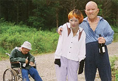

|
TRASH HUMPERS
Harmony Korine | USA 2009 | 75 min.
Material: VHS
Format: DVD
Original language: English
Camera: Harmony Korine
Editing: Leo Scott
Sound: Alex Altman, Jeremy Mazza
With Rachel Korine, Brian Kotzur, Travis Nicholson, Harmony Korine, Chris Gantry
Production: Charles-Marie Anthonioz, Amina Dasmal, Robin Fox
Print/Sales: Visit Films
Best Documentary, CPH:DOX, Copenhague 2009
Trash Humpers is at least as disruptive and exceptional as Harmony Korine's earlier films GUMMO (1997) and JULIEN DONKEY-BOY (1999). The title should be taken literally: the protagonist, unrecognisable thanks to sinister masks, gets his kicks by humping trash cans. With much satanic pleasure and liberated of any sense of morality, the pariahs 'torture' dolls and destroy what they come across or set fire to it.
Korine, who plays one of the leading roles, wants to show the creative beauty of destruction. He filmed his ode to vandalism on video, doing part of the camera work himself, and edited it on two video recorders. At the top of the screen, the commands (forward, rewind) are occasionally plainly visible. In a time when everyone wants to shoot at the highest possible technical quality, he chooses the graininess and imperfection of video, which makes the images even more alarming. The largely improvised scenes seem to follow each other in a random order. The viewer does not even have a narrative structure to cling onto.
Harmony Korine was born in Bolinas, California, in 1973. His family moved to the east coast of the United States when he was five, and he spent his early years in Nashville, Tennessee, and New York. At the age of 19, he wrote the critically acclaimed screenplay Kids (1995) for director Larry Clark.
Films: 2010 Act Da Fool | 2009 Trash Humpers | 2007 Mister Lonely | 2004 Corporate Ghost | 1999 Julien Donkey-Boy | 1998 The Diary of Anne Frank Part II | 1997 Gummo
back
|